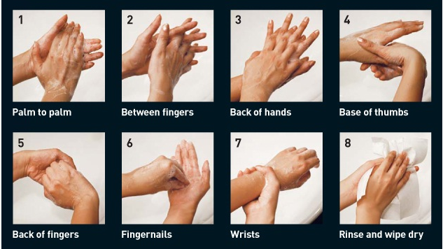

It is almost 90 days since the outbreak of the ‘newly mutated’ novel corona virus SARS-CoV-2 jeopardising healthcare, economy of almost 180 countries all around the globe. At the time of writing this article, massive number around 2,00,000 cases were recorded out of which 89,000 were reported recovered and 8,000 people dead. Among the dead, people who persisted hypertension, diabetes, and people aged 65 and above faced dominant fatalities. It comes down to the collective responsibility of every government and its citizens to safeguard themselves against the menacing COVID-19. Though the government is undertaking some strict measures and regulations against this epidemic, there are few equitable measures which shall be taken from civilians point, which include self-hygiene and social distancing.
Washing hands is a prominent way of annihilating the spread of virus. Hands are the pathway for this virus to enter into our body through nose, mouth and eyes. An average human being touches his/her face 16 times an hour accounting to 256 times a day (neglecting an 8 hour sleep time). National health service(NHS) has prescribed constructive ways of handwash . Start by applying enough soap to cover hands, rub them together and remember to scrub the backs of the hands and in between fingers on either hand. When it comes to using a hand dryer or paper towels, the World Health Organisation (WHO) says that hand dryers are not effective at killing the new corona virus. “Hand dryers are not effective in killing the 2019-nCoV,” WHO states in their Myth Busters advice for the public report. The NHS advises drying your hands thoroughly using paper towels after washing your hands.
Palli Thordarsen, Chemistry professor from University of South Wales-Australia has shared valuable standpoints on how washing hands can effectively prevent us from catching virus. All types of virus necessarily requires host for their survival, although they are able to last for 2 hours to 9 days without any host support. When contacted with corona virus through hands mere rinsing of hands alone does not help, reason being of its sticky nature, the water just brushes over it. The outer cell wall of the virus is made of lipids and fats which strongly contains the inner compounds of the virus. The ‘hydrophobic’ part of the soap molecules gets attached to the cell wall and ‘hydrophilic’ part with the running water. The soap molecule completely restrains the connect between the skin and virus. The combined effect of action of soap and water disrupts the cell wall and makes the virus futile.
The outer cell wall of the virus is made of lipids and fats which strongly contains the inner compounds of the virus. The ‘hydrophobic’ part of the soap molecules gets attached to the cell wall and ‘hydrophilic’ part with the running water. The soap molecule completely restrains the connect between the skin and virus. The combined effect of action of soap and water disrupts the cell wall and makes the virus futile. Hand sanitisers are also effective in fighting the virus. Researchers recommend atleast 60% alcohol concentration in hand sanitiser for its effective results. Many research papers have taken a stand of 60-40 for soap-sanitisers where sanitisers might not be as productive when one’s hand are sweaty or oily. As of soap brand is concerned, any normal soap remains effective. With cure medicines yet to be discovered, SOAP remains the ultimate weapon of annihilation against the menacing virus.
Courtesy: Healthhub
Written by: JayaSurya Frand